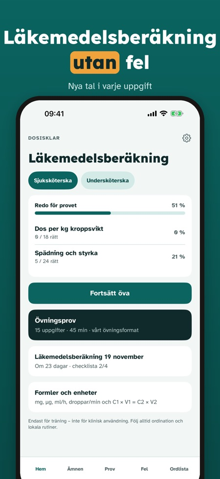
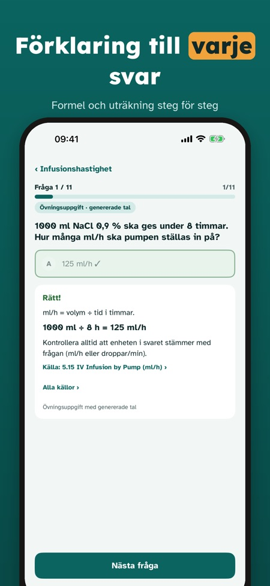
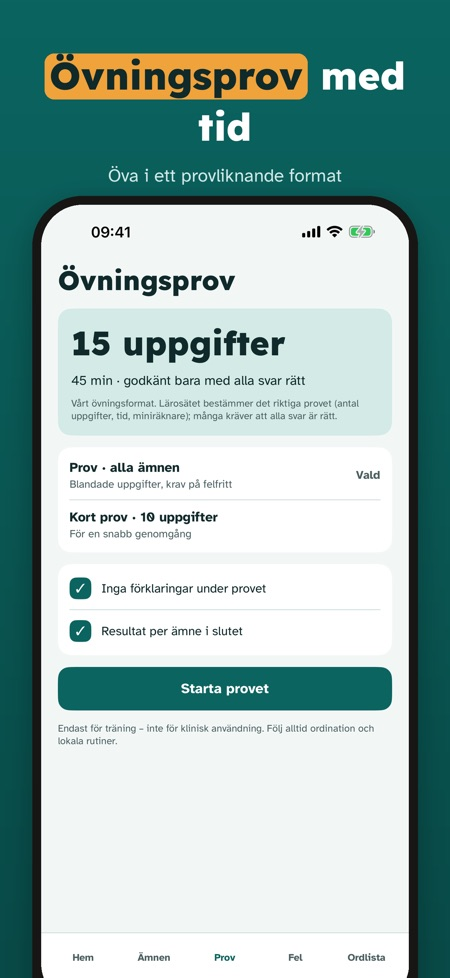

Öva inför tentan i vården. Öva läkemedelsberäkning med nya uppgifter varje gång: enheter, infusion och spädning steg för steg. Endast för tentaträning – inte för klinisk användning.



Dosisklar hjälper sjuksköterskestudenter att öva läkemedelsberäkning – med nya tal i varje uppgift och lösningen steg för steg.
Du kan öva 20 frågor, göra ett fullständigt övningsprov och använda ordlistan och checklistan utan köp. Fullversionen är ett engångsköp som låser upp alla frågor, övningsprov och statistik. Ingen prenumeration.
Dosisklar är endast för tentaträning och får inte användas för att beräkna doser till patienter. Appen är fristående och inte kopplad till lärosätena.